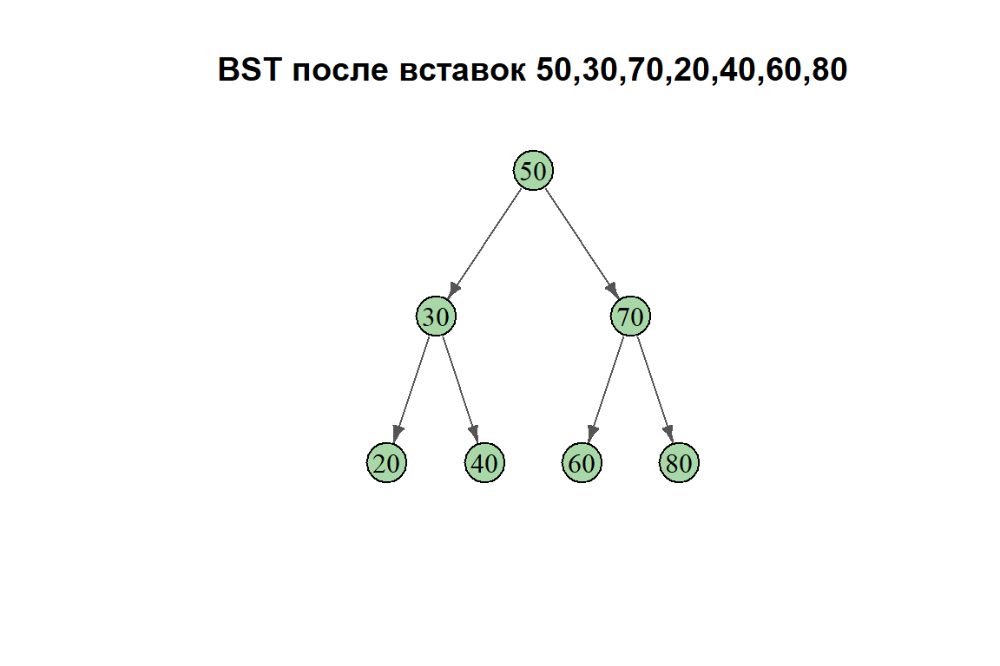
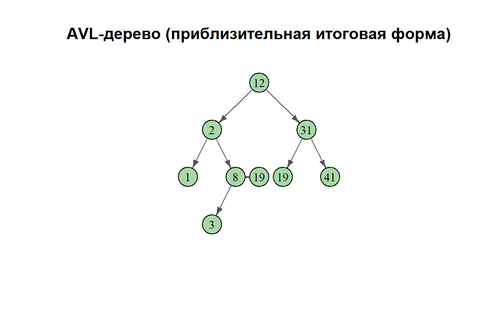
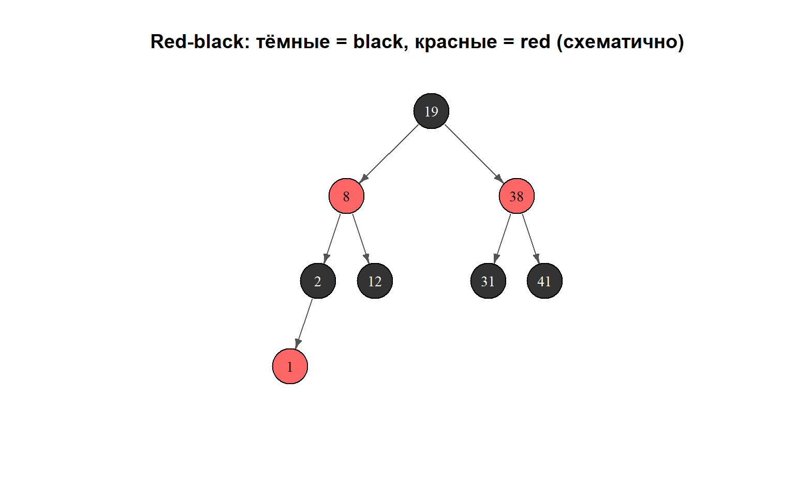

Warning: `graph()` was deprecated in igraph 2.1.0.
ℹ Please use `make_graph()` instead.
Множество (Set) — абстрактный тип данных (ADT), задающий неупорядоченную коллекцию значений без повторов. Удобно думать как о математическом множестве: \(\{1, 3, 4\}\) — порядок не важен, каждый элемент встречается не более одного раза.
Работаем с динамическими множествами (dynamic sets), в которых во время выполнения можно менять состав:
Пример:
\[\{1, 3, 4\} \xrightarrow{\text{add}(5)} \{1, 3, 4, 5\} \xrightarrow{\text{remove}(3)} \{1, 4, 5\}\]
Отображение (Map), его же называют словарём (dictionary), — ADT, задающий неупорядоченную коллекцию пар «ключ–значение» без повторяющихся ключей. Каждому ключу соответствует ровно одно значение. Наглядная аналогия — словарь языка: слово (ключ) и одна выбранная статья (значение).
Пример:
\[\{\langle A,1\rangle, \langle C,3\rangle, \langle B,2\rangle\} \xrightarrow{\text{add}(5,c)} \{\langle A,1\rangle, \langle C,3\rangle, \langle B,2\rangle, \langle 5,c\rangle\}\]
Основные операции Map ADT:
Важно: на один ключ — не больше одного значения. В Java типичный контракт выглядит так:
public interface Map<K, V> {
int size();
boolean isEmpty();
V get(K key);
V put(K key, V value); // returns the old value (or null)
V remove(K key);
Iterable<K> keySet();
Iterable<V> values();
Iterable<Entry<K,V>> entrySet();
}Замечание: методы keySet() и entrySet() полезны, потому что ключи уникальны (нет неоднозначности), а значения могут совпадать — осмысленного «valueSet» нет.
Есть несколько способов реализовать map, с разными компромиссами.
Неотсортированный двусвязный список:
Записи хранятся узлами двусвязного списка; поиск ключа — линейный проход.
Массив (если ключи — малые целые):
Если ключи — целые от \(0\) до \(n-1\), можно завести массив длины \(n\): array[k] = v.
Если диапазон ключей велик или ключи не целые, используют хеш-функции (hash functions), чтобы отображать ключи в индексы (это будет позже в курсе).
Базовый компромисс при представлении упорядоченного отображения (ordered map) — по возрастанию ключей:
| Представление | Поиск | Вставка/удаление |
|---|---|---|
| Отсортированный массив | \(O(\log n)\) (binary search) | \(O(n)\) (сдвиги) |
| Связный список | \(O(n)\) (линейный проход) | \(O(1)\) (при известной ссылке) |
| Сбалансированное BST | \(O(\log n)\) | \(O(\log n)\) |
Цель этой темы — найти структуры, где все операции дают \(O(\log n)\): совместить быстрый поиск и недорогие модификации.
Дерево (tree) — связный ациклический неориентированный граф. Если выделить одну вершину как корень (root), получается корневое дерево (rooted tree); его обычно рисуют «свисающим» вниз от корня, направляя рёбра к листьям.
Термины для корневых деревьев:
Упорядоченные деревья (ordered trees): у каждого узла порядок детей фиксирован и существенен; два дерева с теми же узлами, но другим порядком детей, считаются разными.
\(n\)-арные деревья (\(n\)-ary trees): упорядоченное корневое дерево, в котором у каждого узла не более \(n\) детей. Частные случаи:
Связное представление (linked representation): в узле — данные и указатели на левого ребёнка, правого и родителя.
Массив по нумерации в ширину (level-order numbering): узлы нумеруются по уровням слева направо, корень с индексом 0:
\[\text{root} = 0 \qquad \text{parent}(i) = \left\lfloor \frac{i-1}{2} \right\rfloor \qquad \text{left}(i) = 2i+1 \qquad \text{right}(i) = 2i+2\]
Идеально подходит полным (complete) деревьям; для «разреженных» деревьев в массиве много пустых ячеек. Например, 8 узлов при сильном перекосе могут потребовать массив гораздо длиннее 8.
Пример: узлы A–I с индексами 0, 1, 2, 3, 5, 6, 7, 8, 11:
Index: [ 0 | 1 | 2 | 3 | - | 4 | 5 | 6 | 7 | - | - | 8 | - | - | - ]
Data: [ A | B | C | D | - | E | F | G | H | - | - | I | - | - | - ](Черточки — пустые слоты без узла дерева.)
Чтобы посетить все узлы бинарного дерева, выбирают порядок обхода. Три стандартных:
Пример: корень A (слева B→D и B→C→{H,F}; справа E→{G, I→J}):
Binary Search Tree (BST) — бинарное дерево со свойством BST (BST property):
Для каждого узла \(x\): если \(y\) в левом поддереве \(x\), то \(y.\text{key} \le x.\text{key}\); если \(z\) в правом поддереве \(x\), то \(x.\text{key} \le z.\text{key}\).
Отсюда BST удобен для ordered map: in-order обход выдаёт ключи по возрастанию.
Операции BST:
search(k) — найти значение по ключу \(k\);insert(k, v) — вставить пару ключ–значение;remove(k) — удалить запись с ключом \(k\);findMin() / findMax() — запись с минимальным/максимальным ключом.Ищем ключ \(k\), начиная с корня и следуя свойству BST:
TREE-SEARCH(x, k):
if x == NIL or k == x.key
return x
if k < x.key
return TREE-SEARCH(x.left, k)
else
return TREE-SEARCH(x.right, k)Эквивалентная итеративная версия без рекурсии:
ITERATIVE-TREE-SEARCH(x, k):
while x ≠ NIL and k ≠ x.key
if k < x.key
x = x.left
else
x = x.right
return xВременная сложность: \(O(h)\), где \(h\) — высота дерева; лучший случай \(O(1)\) (ключ в корне).
Минимум — у самого левого листа/узла на левой цепочке; максимум — у самого правого:
TREE-MINIMUM(x): TREE-MAXIMUM(x):
while x.left ≠ NIL while x.right ≠ NIL
x = x.left x = x.right
return x return xОбе процедуры за время \(O(h)\).
In-order successor узла \(x\) — узел с наименьшим ключом, строго большим \(x.\text{key}\); нужен при удалении.
TREE-SUCCESSOR(x):
if x.right ≠ NIL
return TREE-MINIMUM(x.right) // leftmost in right subtree
else
y = x.parent
while y ≠ NIL and x == y.right
x = y
y = y.parent
return yСмысл: если у \(x\) есть правое поддерево, successor — минимум в нём; иначе поднимаемся вверх, пока не выйдем из правого поддерева родителя — этот родитель и есть successor.
Чтобы вставить ключ \(k\) со значением \(v\), ищем место по правилам BST и вешаем новый лист.
Время: \(O(h)\) — один путь от корня.
Три случая по числу детей:
Время: \(O(h)\) во всех случаях.
Все операции BST стоят \(O(h)\). Вопрос: чему равен \(h\) на практике?
В худшем случае BST даёт \(O(n)\) на операцию; чтобы этого избежать, используют self-balancing BSTs — самобалансирующиеся BST.
AVL-деревья (AVL trees) (Adelson–Velsky и Landis, 1962) — самобалансирующиеся BST. Они поддерживают инвариант баланса (balance invariant):
Для каждого узла высоты левого и правого поддеревьев отличаются не более чем на 1.
Отсюда высота AVL-дерева с \(n\) узлами — \(O(\log n)\), и все операции остаются \(O(\log n)\).
Фактор баланса (balance factor) узла: \[\text{bf}(x) = h(\text{left}(x)) - h(\text{right}(x))\]
В AVL требуется \(|\text{bf}(x)| \le 1\) для каждого \(x\) (высота пустого поддерева по соглашению \(-1\)).
После вставки или удаления инвариант может нарушиться; его восстанавливают поворотами (rotations) — локальной перестройкой, меняющей соотношение высот без нарушения свойства BST.
Правый поворот в узле \(y\) (обратная операция — левый поворот в \(x\)):
RIGHT-ROTATE(T, y):
x = y.left
β = x.right
x.right = y
y.left = β
update heights of y, then x
return x // new root of this subtreeПравый поворот применяют, когда левое поддерево слишком «высокое» (фактор баланса \(+2\)); левый поворот — зеркальный случай.
Эффект на высоту:
Пусть высоты поддеревьев слева направо \(h_\alpha\), \(h_\beta\), \(h_\gamma\).
Поворот уменьшает высоту на 1 и возвращает баланс.
После вставки несбалансированным может стать не более одного узла — самый нижний предок новой вершины на пути к корню. Возможны четыре конфигурации:
| Случай | Условие | Исправление |
|---|---|---|
| Left-Left (LL) | слишком высоко левое поддерево левого ребёнка | один правый поворот в несбалансированном узле |
| Left-Right (LR) | слишком высоко правое поддерево левого ребёнка | левый поворот в левом ребёнке, затем правый в узле |
| Right-Right (RR) | слишком высоко правое поддерево правого ребёнка | один левый поворот в несбалансированном узле |
| Right-Left (RL) | слишком высоко левое поддерево правого ребёнка | правый поворот в правом ребёнке, затем левый в узле |
Вставка и rebalance: вставляем как в обычном BST, затем поднимаемся к корню, обновляя высоты и выполняя повороты при необходимости.
Пусть \(n_{\min}(h)\) — минимальное число узлов в AVL-дереве высоты \(h\):
\[n_{\min}(h) = n_{\min}(h-1) + n_{\min}(h-2) + 1\]
где \(n_{\min}(-1) = 0\) (пустое дерево), \(n_{\min}(0) = 1\) (один узел).
Рекуррентность близка к числам Фибоначчи: \(n_{\min}(h) \ge 2 \cdot n_{\min}(h-2) + 1\), откуда \(n_{\min}(h) \ge 2^{h/2}\). Значит \(n \ge 2^{h/2}\) и \(h \le 2\log_2 n = O(\log n)\).
Red-black trees — ещё один класс самобалансирующихся BST. Как и AVL, дают высоту \(O(\log n)\), но баланс задаётся другим инвариантом; на практике при вставках/удалениях часто нужно меньше поворотов (асимптотически порядок тот же).
У каждого узла есть цвет (colored) — красный или чёрный; так кодируются ограничения на высоту без явного хранения высот в каждом узле.
Корректное красно-чёрное дерево удовлетворяет всем пяти условиям:
Black-height \(\text{bh}(x)\) — число чёрных узлов на пути от \(x\) до листа (сам \(x\) не считается).
Лемма: у красно-чёрного дерева с \(n\) внутренними узлами высота не превосходит \(2\log_2(n+1)\).
Набросок доказательства:
Две фазы:
Фаза 1: вставка как в обычном BST, новый узел красим в red.
Фаза 2: устраняем нарушение инварианта 4 (красный родитель у красного ребёнка). Три случая (ниже для «левой» конфигурации; правая симметрична):
В конце корень снова делают чёрным (инвариант 2).
Удаление сложнее: после снятия узла может нарушиться black-height; для устранения «double-black» есть четыре случая. Полный алгоритм — у Cormen et al. (2022, гл. 13.4).
| Свойство | AVL | Red-black |
|---|---|---|
| Оценка высоты | \(\le 1.44\log_2(n+1)\) | \(\le 2\log_2(n+1)\) |
| Баланс | жёстче | мягче |
| Повороты при insert | \(\le 2\) | \(\le 2\) |
| Повороты при delete | \(O(\log n)\) | \(\le 3\) |
| Когда лучше | много поиска | много вставок/удалений |
AVL ниже и строже по балансу — чуть быстрее чистые запросы. Red-black при удалениях делает не больше трёх поворотов (против \(O(\log n)\) у AVL), поэтому чаще выбирают при частых модификациях. Обе структуры дают \(O(\log n)\) для основных операций.
Для \(d\)-арного дерева (не более \(d\) детей у узла) с нумерацией по уровню в массиве:
\[\text{parent}_d(i) = \left\lfloor \frac{i-1}{d} \right\rfloor \qquad \text{child}_{d,k}(i) = d \cdot i + k \quad (1 \le k \le d)\]
При \(d = 2\) (binary): \(\text{parent}(i) = \lfloor(i-1)/2\rfloor\), \(\text{left}(i) = 2i+1\), \(\text{right}(i) = 2i+2\) — стандартная раскладка heap.
Число узлов в идеальном \(d\)-арном дереве высоты \(h\):
\[N(d, h) = \frac{d^{h+1} - 1}{d - 1} = 1 + d + d^2 + \cdots + d^h\]
Пусть \(B(h)\) — минимально возможное число внутренних узлов в red-black дереве с black-height \(h\) (black-height — число чёрных узел на пути от корня до листа; у пустого дерева \(\text{bh} = 0\), у одного узла \(\text{bh} = 1\)).
Ключевая идея: чтобы при фиксированном black-height минимизировать число внутренних узлов, нужно по максимуму использовать red-узлы: они увеличивают размер дерева, не увеличивая black-height.
Часть 1 — рекуррентность:
У дерева с black-height \(h\) есть чёрный корень и два поддерева. Чтобы минимизировать число узлов, берём минимально возможные поддеревья с black-height \(h-1\). Дальнейшая минимизация достигается, если на «вершине» каждого поддерева разрешён красный узел (максимальная «структурная эффективность»).
Минимум достигается, когда оба ребёнка — сами минимальные red-black поддеревья с black-height \(h-1\) (иногда с красным корнем у поддерева):
\[B(h) = 2B(h-1) + 1\]
с базой \(B(0) = 0\) (пустое дерево, black-height 0). Точнее: при \(h \ge 1\) корень чёрный, у каждого ребёнка black-height \(h-1\); ребёнок может быть красным (добавляет узел «без шага» по black-height). Минимальная конструкция:
\[B(h) = 2B(h-1) + 1 \quad \text{при } B(0) = 0\]
Вычисленные значения:
| \(h\) | \(B(h) = 2B(h-1)+1\) |
|---|---|
| 0 | 0 |
| 1 | 1 |
| 2 | 3 |
| 3 | 7 |
| 4 | 15 |
| 5 | 31 |
| 6 | 63 |
| 7 | 127 |
| 8 | 255 |
Замечание: \(B(h) = 2^h - 1\).
Часть 2 — нижняя оценка:
Из явного вида \(B(h) = 2^h - 1 \ge 2^h / 2 = \frac{1}{2} \cdot 2^h\):
\[B(h) \ge \frac{1}{2} \cdot 2^h\]
Тогда и \(B(h) \ge c \cdot 2^{h/2}\) (так как \(2^h \ge 2^{h/2}\) при \(h \ge 0\)), например \(c = 1/2\).
Часть 3 — оценка высоты:
У дерева с \(n\) внутренними узлами и black-height \(\text{bh}\) выполнено \(n \ge B(\text{bh}) = 2^{\text{bh}} - 1\), откуда \(\text{bh} \le \log_2(n+1)\).
Полная высота \(h \le 2 \cdot \text{bh}\) (на любом пути корень–лист не больше половины узлов красные), значит:
\[h \le 2\log_2(n+1) = O(\log n)\]
Часть 4 — при \(n = 10^6\):
\[h \le 2\log_2(10^6 + 1) \approx 2 \times \log_2(10^6) = 2 \times 19.93 \approx \mathbf{40}\]
Ответ: 1. \(B(h) = 2B(h-1) + 1\), \(B(0) = 0\); явно \(B(h) = 2^h - 1\). 2. \(B(h) \ge \frac{1}{2} \cdot 2^h\) (равносильно \(B(h) \ge 1 \cdot 2^{h/2}\) при всех \(h \ge 0\)). 3. \(h \le 2\log_2(n+1) = O(\log n)\). 4. При \(n = 10^6\) максимальная высота \(\approx 40\).
Постройте BST, вставляя ключи в указанном порядке:
\[7, 3, 5, 10, 4, 2, 6, 8, 9, 12, 1, 11\]
Часть 1 — построение:
Вставляем по правилам BST (меньше — влево, больше — вправо):
Итоговое BST:
7
/ \
3 10
/ \ / \
2 5 8 12
/ / \ \ /
1 4 6 9 11Часть 2 — удаления:
Удаление 10 (два ребёнка: 8 и 12): случай с двумя детьми. Берём successor (минимум в правом поддереве = 11). Заменяем 10 на 11; 11 снимаем с прежнего места (лист).
7
/ \
3 11
/ \ / \
2 5 8 12
/ / \ \
1 4 6 9Удаление 9 (лист): случай листа — просто удаляем.
7
/ \
3 11
/ \ / \
2 5 8 12
/ / \
1 4 6Удаление 8 (лист): аналогично.
7
/ \
3 11
/ \ \
2 5 12
/ / \
1 4 6Удаление 7 (два ребёнка: 3 и 11): снова два ребёнка. Successor — минимум справа = 11, но у 11 есть правый ребёнок 12. Подменяем ключ 7 на 11; узел 11 убираем, поднимая 12.
11
/ \
3 12
/ \
2 5
/ / \
1 4 6Удаление 6 (лист): удаляем.
11
/ \
3 12
/ \
2 5
/ /
1 4Часть 3 — какие ключи могут стать корнем:
Единственный узел с двумя детьми, где есть выбор стратегии при удалении, — 7 (четвёртое удаление). Его successor — 11, predecessor — 6 (на этот момент 6 ещё в дереве).
Если при удалении 7 брали successor (11), корень становится 11 (как на рисунках выше).
Если брали predecessor (6): 6 — крайний справа узел в левом поддереве 7 (правый ребёнок 5). Подменяем 7 на 6 и удаляем старый 6 под 5 — корень 6.
Важно: уже при первом удалении 10 successor — 11, predecessor — 9. Если заменить 10 на predecessor 9 и снять 9 с листа, форма дерева меняется; тогда при удалении 7 successor может стать 9 (если 8 уже удалён, а «малый» справа от 7 — 9). Если же у 7 брали predecessor, снова получаем корень 6.
Множество возможных корней: \(\{6, 9, 11\}\).
Ответ: 1. BST как на рисунке. 2. Случаи удалений — как в разборе; промежуточные деревья показаны. 3. После всех удалений корень мог быть 6, 9 или 11.
Рассмотрим хранение упорядоченного корневого \(d\)-арного дерева в массиве по нумерации в ширину (корень с индексом 0).
Часть 1 — число узлов в идеальном \(d\)-арном дереве высоты \(h\):
Уровень 0 (корень): 1 узел. Уровень 1: \(d\) узлов. Уровень \(k\): \(d^k\) узлов. Сумма геометрической прогрессии:
\[N(d, h) = \sum_{k=0}^{h} d^k = \frac{d^{h+1} - 1}{d - 1}\]
При \(d = 2\): \(N(2, h) = 2^{h+1} - 1\). При \(d = 4\), \(h = 2\): \(N = (4^3 - 1)/3 = 21\).
Часть 2 — формулы индексов:
(a) Родитель узла с индексом \(i > 0\):
Дети узла \(j\) занимают индексы от \(dj+1\) до \(dj+d\). Узел \(i\) — ребёнок \(j\), если \(dj+1 \le i \le dj+d\), то есть \(j = \lfloor(i-1)/d\rfloor\).
\[\text{parent}_d(i) = \left\lfloor \frac{i-1}{d} \right\rfloor \quad (i > 0)\]
(b) \(k\)-й ребёнок узла с индексом \(i\):
У узла \(i\) дети с индексами \(di+1, di+2, \ldots, di+d\). У \(k\)-го ребёнка (\(1 \le k \le d\)) индекс:
\[\text{child}_{d,k}(i) = d \cdot i + k\]
Проверка при \(d = 2\): \(\text{child}_{2,1}(i) = 2i+1\) (левый), \(\text{child}_{2,2}(i) = 2i+2\) (правый) — стандартные формулы для heap. ✓
Часть 3 — дети узла \(i = 17\) при \(d = 4\), \(n = 70\):
\[\text{child}_{4,k}(17) = 4 \times 17 + k = 68 + k\]
Индексы детей: \(69, 70, 71, 72\). Допустимы индексы \(0 \ldots n-1 = 69\), поэтому:
Ответ: 1. \(N(d,h) = \dfrac{d^{h+1}-1}{d-1}\) 2. (a) \(\text{parent}_d(i) = \lfloor(i-1)/d\rfloor\); (b) \(\text{child}_{d,k}(i) = d \cdot i + k\) 3. В массиве существует только ребёнок с индексом 69.
Вставьте в изначально пустое BST ключи в указанном порядке и нарисуйте дерево:
\[50, 30, 70, 20, 40, 60, 80\]
Ключевая идея: при вставке в BST сравниваем новый ключ с текущим узлом: меньше — влево, больше — вправо; новый узел вешаем как лист в первой свободной позиции на пути.
Пошаговые вставки:
Итоговое BST:
Warning: `graph()` was deprecated in igraph 2.1.0.
ℹ Please use `make_graph()` instead.
Ответ: корень 50; слева поддерево с корнем 30 (дети 20, 40), справа — с корнем 70 (дети 60, 80). Дерево идеально сбалансировано, высота 2.
Постройте AVL-дерево, вставляя в пустое дерево ключи в указанном порядке:
\[1, 2, 3, 8, 41, 12, 19, 31, 38\]
Покажите дерево после каждого поворота.
Ключевая идея: после каждой вставки проверяйте balance factor на пути от новой вершины к корню; одиночные или двойные rotations возвращают условие \(|\text{bf}| \le 1\).
Соглашение: \(h(\text{empty}) = -1\), \(h(\text{single node}) = 0\).
Шаг 1 — вставка 1: только узел 1 — сбалансировано.
Шаг 2 — вставка 2: \(2 > 1\) — справа от 1; \(\text{bf}(1) = -1\), ещё ок.
Шаг 3 — вставка 3: \(3 > 1\) → вправо; \(3 > 2\) → справа от 2; \(\text{bf}(1) = -2\) — случай RR. Левый поворот вокруг 1:
Before: 1 After: 2
\ / \
2 1 3
\
3Поворотов пока: 1.
Шаг 4 — вставка 8: \(8 > 2\) → к 3; \(8 > 3\) → справа от 3; \(\text{bf}(3) = -1\), \(\text{bf}(2) = -1\) — баланс сохраняется.
Шаг 5 — вставка 41: \(41 > 2\) → вправо; \(41 > 3\) → вправо; \(41 > 8\) → справа от 8; \(\text{bf}(3) = -2\) — снова RR. Левый поворот вокруг 3:
Before: 2 After: 2
/ \ / \
1 3 1 8
\ / \
8 3 41
\
41Поворотов: 2.
Шаг 6 — вставка 12: \(12 > 8\), \(12 < 41\) — слева от 41; \(\text{bf}(41) = 1\), \(\text{bf}(8) = -1\) — ок.
Шаг 7 — вставка 19: \(19 > 8\), \(19 < 41\), \(19 > 12\) — справа от 12; \(\text{bf}(41) = 2\), у 12 правый ребёнок 19 — случай LR в узле 41: сначала левый поворот в 12, затем правый в 41:
After LR at 41: 2
/ \
1 8
/ \
3 19
/ \
12 41Поворотов: 4.
Шаг 8 — вставка 31: \(31 > 19\) — справа от 19; локально сбалансировано (\(\text{bf}(19) = -1\)).
Шаг 9 — вставка 38: может потребоваться ещё одна двойная rotation; итог — сбалансированное AVL высоты 3.
Итоговая форма (сбалансированное AVL, высота 3):

Всего поворотов: 4 (два одиночных и одна двойная, считается как два).
Ответ: для этой последовательности ключей нужно 4 поворота; итоговое AVL сбалансировано, высота 3.
Постройте red-black дерево, вставляя в пустое дерево ключи в указанном порядке:
\[1, 2, 3, 8, 41, 12, 19, 31, 38\]
Ключевая идея: новый узел красим в red; если нарушается правило «у красного родителя не может быть красного ребёнка», применяют Case 1 (перекраска), Case 2 (поворот, сводящий к Case 3) или Case 3 (поворот + перекраска). Корень в конце снова делают чёрным.
Обозначения: B — black, R — red.
Вставка 1: корень 1(B).
Вставка 2: \(2 > 1\) — справа от 1, красим в R; нарушений нет: 1(B) — правый ребёнок 2(R).
Вставка 3: \(3 > 1 > 2\) — справа от 2(R); пара 2(R)–3(R) запрещена. Дядя 3 — NIL (чёрный) → Case 3 (right-right): левый поворот вокруг 1 и перекраска.
After rotation + recolor: 2(B)
/ \
1(R) 3(R)Вставка 8: правый ребёнок 3(R); дядя 8 — 1(R) → Case 1: перекрасить 3 и 1 в B, 2 в R; затем корень 2 снова B.
Tree: 2(B)
/ \
1(B) 3(B)
\
8(R)Вставка 41: справа от 8(R); левый ребёнок 3 — NIL → Case 3: левый поворот вокруг 3.
After: 2(B)
/ \
1(B) 8(B)
/ \
3(R) 41(R)Вставка 12: \(12 < 41\) — слева от 41(R); дядя 12 — 3(R) → Case 1: 41 и 3 в B, 8 в R; корень 2 остаётся B; ребро 2(B)–8(R) допустимо.
Tree: 2(B)
/ \
1(B) 8(R)
/ \
3(B) 41(B)
/
12(R)Вставка 19: справа от 12(R); дядя NIL → Case 2 (узел — правый ребёнок): левый поворот в 12, затем правый в 41 и перекраска.
Вставка 31: продолжаем ту же трёхслучайную схему.
Вставка 38: возможны дополнительные повороты и перекраски, чтобы сохранить все пять инвариантов.
Итоговое red-black дерево (один из допустимых вариантов после 9 вставок):

Ответ: дерево строится перекрасками и поворотами после каждой вставки; при 9 узлах высота \(\le 4\), что укладывается в оценку \(2\log_2(10) \approx 6.6\).
В приведённом ниже red-black дереве удалите ключи по порядку: \(8, 12, 19, 31, 38, 41\).
Исходное дерево: корень 38 (B), слева 19 (R), справа 41 (B); у 19 дети 12 (B) и 31 (B); у 12 левый ребёнок 8 (R).
Ключевая идея: сначала удаление как в BST, затем устранение нарушений black-height и метки double-black (четыре стандартных случая). Ниже — сжатая трассировка.
Исходное дерево:
38(B)
/ \
19(R) 41(B)
/ \
12(B) 31(B)
/
8(R)Удаление 8 (красный лист): снимаем без последствий для black-height.
38(B)
/ \
19(R) 41(B)
/ \
12(B) 31(B)Удаление 12 (чёрный лист): появляется double-black; брат 12 — 31(B) без красных детей → Case 2: 31 в R, «лишняя чёрнота» поднимается к 19(R); так как 19 красный, перекрашиваем 19 в B и поглощаем double-black.
38(B)
/ \
19(B) 41(B)
\
31(R)Удаление 19 (чёрный, один ребёнок 31(R)): заменяем 19 на 31 и красим 31 в B.
38(B)
/ \
31(B) 41(B)Удаление 31 (чёрный лист): double-black на месте 31; брат 41(B), родитель 38(B) → Case 2: 41 в R, дефект поднимается к корню 38; корень перекрашиваем в B — дефект снят.
38(B)
\
41(R)Удаление 38 (чёрный корень, справа 41(R)): корень заменяем на 41, красим в B.
41(B)Удаление 41: оставшийся узел снимаем — дерево пустое.
Ответ: после шести удалений дерево пустое; использовались снятие красных листьев, исправление double-black перекраской и подмена чёрного узла его красным ребёнком.
Запишите in-order, pre-order и post-order обходы для BST:
корень 20; слева 10 (дети 5 и 15); справа 30 (дети 25 и 35).
Ключевая идея: применяем определения обходов рекурсивно; для BST in-order всегда даёт ключи по возрастанию.
Структура дерева:
20
/ \
10 30
/ \ / \
5 15 25 35Ответ:
Каково максимальное число узлов у бинарного дерева высоты \(h\)? Минимальное? Кратко обоснуйте.
Ключевая идея: максимум даёт «полное» дерево, минимум — длинная цепочка с одним листом на глубине \(h\).
Максимум:
Если на каждом уровне узлов как можно больше, получается идеальное бинарное дерево: на уровне \(k\) (с нуля) ровно \(2^k\) узлов.
\[N_{\max}(h) = \sum_{k=0}^{h} 2^k = 2^{h+1} - 1\]
Например, при высоте 2 — \(2^3 - 1 = 7\) узлов.
Минимум:
Один лист на глубине \(h\), на каждом уровне \(0..h-1\) — по одному внутреннему узлу с одним ребёнком:
\[N_{\min}(h) = h + 1\]
Цепочка \(1 \to 2 \to 3\) имеет высоту 2 и \(3 = h+1\) узлов.
Ответ:
Запишите псевдокод TREE-PREDECESSOR(x) (in-order predecessor узла \(x\)). Какова временная сложность?
Ключевая идея: predecessor — зеркальная конструкция к successor: вместо правого поддерева ищем максимум в левом; вместо подъёма «с правого ребёнка» — «с левого».
In-order predecessor узла \(x\) — узел с наибольшим ключом, строго меньшим \(x.\text{key}\).
TREE-PREDECESSOR(x):
if x.left ≠ NIL
return TREE-MAXIMUM(x.left) // rightmost node in left subtree
else
// Find the lowest ancestor of x whose right child is an ancestor of x
y = x.parent
while y ≠ NIL and x == y.left
x = y
y = y.parent
return yДва случая:
Сложность: \(O(h)\) по высоте; в худшем случае путь от листа до корня.
Ответ: псевдокод выше корректен; время \(O(h)\).
Докажите, что высота AVL-дерева с \(n\) узлами есть \(O(\log n)\).
Ключевая идея: оценим снизу минимальное число узлов \(n_{\min}(h)\) при высоте \(h\) и «развернём» неравенство.
Обозначение: \(n_{\min}(h)\) — минимум узлов в AVL высоты \(h\).
База:
Рекуррентность: у корня одно поддерево высоты \(h-1\) (чтобы высота была \(h\)), второе — высоты не меньше \(h-2\) (инвариант AVL). Минимум при высотах \(h-1\) и \(h-2\):
\[n_{\min}(h) = 1 + n_{\min}(h-1) + n_{\min}(h-2)\]
Первые значения:
| \(h\) | \(n_{\min}(h)\) |
|---|---|
| -1 | 0 |
| 0 | 1 |
| 1 | 2 |
| 2 | 4 |
| 3 | 7 |
| 4 | 12 |
Нижняя оценка: \(n_{\min}(h) \ge 2^{h/2}\) (сильная индукция):
Вывод: для любого AVL с \(n\) узлами и высотой \(h\):
\[n \ge n_{\min}(h) \ge 2^{h/2}\]
Логарифмирование: \(h \le 2\log_2 n\), т.е. \(h = O(\log n)\).
Ответ: высота AVL с \(n\) узлами не превосходит \(2\log_2 n = O(\log n)\).
Докажите, что высота red-black дерева с \(n\) внутренними узлами не превосходит \(2\log_2(n+1)\) (Cormen et al., 2022, Lemma 13.1).
Ключевая идея: связать black-height с числом узлов и использовать запрет на два красных подряд.
Лемма: поддерево с корнем \(x\) содержит не меньше \(2^{\text{bh}(x)} - 1\) внутренних узлов.
Индукция по высоте \(x\):
К корню:
Пусть \(h\) — высота дерева, \(\text{bh}\) — black-height корня. По инварианту 4 на любом пути корень–лист не меньше половины узлов чёрные, значит \(\text{bh}(\text{root}) \ge h/2\). Из леммы:
\[n \ge 2^{\text{bh}(\text{root})} - 1 \ge 2^{h/2} - 1\]
Отсюда:
\[n + 1 \ge 2^{h/2} \implies h/2 \le \log_2(n+1) \implies h \le 2\log_2(n+1)\]
Ответ: высота red-black дерева с \(n\) внутренними узлами \(\le 2\log_2(n+1) = O(\log n)\).
Сравните AVL и red-black деревья: когда уместнее одно, когда другое?
Ключевая идея: обе структуры дают \(O(\log n)\), но различаются константой в оценке высоты и ценой rebalancing.
Высота:
Повороты:
Практика:
| Сценарий | Что брать |
|---|---|
| много поиска, мало модификаций | AVL — меньше сравнений на запрос |
| много вставок/удалений | red-black — дешевле удаление |
| смешанная нагрузка | чаще red-black (Java TreeMap, C++ std::map) |
| экономия памяти | AVL хранит высоту; red-black — бит цвета |
Ответ: AVL — при доминировании чтения; red-black — при частых изменениях структуры.
Оцените асимптотику worst-case времени работы Solve:
Solve(A, n):
return Helper(A, 1, n)
Helper(A, l, r):
if r - l <= 50
return l
else
low := l; high := r
while low < high:
mid := ⌊(low + high) / 2⌋
count := 0
for i from l to r:
if A[i] > A[mid]: count := count + 1
if count > (r - l + 1) / 2 then high := mid else low := mid + 1
k := ⌈(r - l + 1) / 3⌉
a := Helper(A, l, l + k - 1)
b := Helper(A, l + k, l + 2*k - 1)
c := Helper(A, l + 2*k, r)
return lowШаг 1: рекуррентность.
Пусть \(n = r - l + 1\). База: при \(n \le 51\) сразу возврат.
Для больших \(n\) положим \(k = \lceil n/3 \rceil \approx n/3\).
Три рекурсивных вызова:
Helper(A, l, l + k - 1) — размер \(k \approx n/3\)Helper(A, l + k, l + 2k - 1) — размер \(k \approx n/3\)Helper(A, l + 2k, r) — размер \(n - 2k \approx n/3\)Итого три рекурсии, каждая на \(\approx n/3\) элементов.
Нерекурсивная работа: цикл while — \(O(\log n)\) итераций (binary search), внутри каждой — цикл for по \(n\) элементам: \(\Theta(n)\) за итерацию, всего \(\Theta(n \log n)\).
Рекуррентность:
\[T(n) = 3T(n/3) + \Theta(n \log n)\]
Шаг 2: Master Theorem.
\(a = 3\), \(b = 3\), \(f(n) = \Theta(n \log n)\).
\(n^{\log_b a} = n^{\log_3 3} = n\).
Сравниваем \(f(n) = n \log n\) с \(n^{\log_3 3} = n\): \(f(n) = n^1 \cdot \log n\).
Это пограничный случай \(f(n) = \Theta(n^{\log_b a} \cdot \log^k n)\) при \(k = 1\).
Применяется Case 2 (расширенный) с \(k = 1\):
\[T(n) = \Theta(n^{\log_b a} \cdot \log^{k+1} n) = \Theta(n \cdot \log^2 n)\]
\[\boxed{T(n) = \Theta(n \log^2 n)}\]
Укажите наиболее точную связь (\(O\), \(\Theta\), \(\Omega\)) или \(\times\), если ни одна не подходит:
| # | \(f(n)\) | \(g(n)\) |
|---|---|---|
| 1 | \(\sqrt{n} \cdot \log_2 n\) | \(n^{3/4}\) |
| 2 | \(n^{1.001}\) | \(n \log^2 n\) |
| 3 | \(\log_2(n!)\) | \(n \log_2 n\) |
| 4 | \(\sqrt[4]{n}\) | \(\log_2 n\) |
| 5 | \((1 + 2/n)^n\) | \(n^2\) |
| 6 | \(3^n + 2^n\) | \(3^n\) |
| 7 | \(n^2/\log n\) | \(n\sqrt{n}\) |
| 8 | \((n+1)!\) | \(n!\) |
1. \(\sqrt{n} \cdot \log_2 n\) vs \(n^{3/4}\)
\(f(n) = n^{1/2} \log n\). Сравниваем с \(g(n) = n^{3/4}\).
\(\frac{f(n)}{g(n)} = \frac{n^{1/2}\log n}{n^{3/4}} = \frac{\log n}{n^{1/4}} \to 0\) as \(n \to \infty\).
Значит \(f(n) = o(g(n))\).
Ответ: \(f(n) = O(g(n))\)
2. \(n^{1.001}\) vs \(n \log^2 n\)
\(\frac{f(n)}{g(n)} = \frac{n^{1.001}}{n \log^2 n} = \frac{n^{0.001}}{\log^2 n} \to \infty\).
Степень \(n\) растёт быстрее любого \(\log^k n\).
Ответ: \(f(n) = \Omega(g(n))\)
3. \(\log_2(n!)\) vs \(n \log_2 n\)
По Стирлингу: \(\log(n!) = \Theta(n \log n)\) — обе функции \(\Theta(n \log n)\).
Ответ: \(f(n) = \Theta(g(n))\)
4. \(\sqrt[4]{n} = n^{1/4}\) vs \(\log_2 n\)
Любая положительная степень \(n\) растёт быстрее \(\log n\).
\(\frac{n^{1/4}}{\log n} \to \infty\).
Ответ: \(f(n) = \Omega(g(n))\)
5. \((1 + 2/n)^n\) vs \(n^2\)
\((1 + 2/n)^n \to e^2 \approx 7.389\) (константа), а \(g(n) = n^2 \to \infty\).
Ответ: \(f(n) = O(g(n))\)
6. \(3^n + 2^n\) vs \(3^n\)
\(3^n + 2^n = 3^n(1 + (2/3)^n)\). As \(n \to \infty\), \((2/3)^n \to 0\), so \(3^n + 2^n \sim 3^n\).
\(\frac{3^n + 2^n}{3^n} = 1 + (2/3)^n \to 1\).
Ответ: \(f(n) = \Theta(g(n))\)
7. \(n^2/\log n\) vs \(n\sqrt{n} = n^{3/2}\)
\(\frac{f(n)}{g(n)} = \frac{n^2/\log n}{n^{3/2}} = \frac{n^{1/2}}{\log n} \to \infty\).
Ответ: \(f(n) = \Omega(g(n))\)
8. \((n+1)!\) vs \(n!\)
\((n+1)! = (n+1) \cdot n!\), so \(\frac{(n+1)!}{n!} = n+1 \to \infty\).
Ответ: \(f(n) = \Omega(g(n))\)
Дано множество \(A\) из \(n\) целых и цель \(k\). Нужно найти подмножество максимального размера, сумма элементов которого ровно \(k\). Наивный алгоритм перебирает все подмножества.
Часть 1: псевдокод
BruteForceMaxSubset(A, n, k):
best := ∅
for mask from 0 to 2^n - 1:
S := ∅
total := 0
for i from 0 to n - 1:
if (mask >> i) & 1 == 1:
S := S ∪ {A[i]}
total := total + A[i]
if total == k and |S| > |best|:
best := S
return bestЧасть 2: время в худшем случае
\[\Theta(n \cdot 2^n)\]
Часть 3: обоснование
Подмножеств \(2^n\). Для каждой битовой маски просматриваем \(n\) битов, восстанавливаем сумму за \(\Theta(n)\), итого \(\Theta(n \cdot 2^n)\).
Часть 4: память при итеративном переборе
Для маски и текущих сумм/счётчиков — \(O(1)\); хранение лучшего найденного подмножества — \(O(n)\).
Память: \(O(n)\) (без входного массива).
В \(n\) отсортированных списках всего \(m\) элементов. Слейте их в один отсортированный список из \(m\) элементов.
Заполните таблицу worst-case времени в зависимости от представления входных списков и выхода:
| Вход / выход | Массив | Односвязный (с хвостом) | Двусвязный |
|---|---|---|---|
| Массив | ? | ? | ? |
| Односвязный (с хвостом) | ? | ? | ? |
| Двусвязный | ? | ? | ? |
Стратегия слияния:
Используем \(k\)-way merge: min-heap на головах \(n\) списков, \(m\) извлечений по \(O(\log n)\) — само слияние \(O(m \log n)\).
Ключевые операции:
Итоговая сложность:
При min-heap размера \(n\) слияние \(O(m \log n)\) при любых представлениях (нужны \(O(1)\) доступ к голове, снятие головы и дописывание в выход). Наивный проход по \(n\) головам на каждый из \(m\) шагов дал бы \(O(mn)\).
| Вход / выход | Массив | Односвязный (с хвостом) | Двусвязный |
|---|---|---|---|
| Массив | \(O(m \log n)\) | \(O(m \log n)\) | \(O(m \log n)\) |
| Односвязный (с хвостом) | \(O(m \log n)\) | \(O(m \log n)\) | \(O(m \log n)\) |
| Двусвязный | \(O(m \log n)\) | \(O(m \log n)\) | \(O(m \log n)\) |
Ответ: со min-heap все ячейки \(O(m \log n)\); представление не меняет порядок, так как везде есть \(O(1)\) на голове и при дописывании в конец выхода.
Гибрид: запускаем QUICK-SORT, но останавливаем рекурсию, когда размер подмассива \(\le k\), затем к каждому малому блоку применяем COUNTING-SORT (ключи в \([0, R]\)) и конкатенируем.
Часть 1: общая оценка
Фаза QUICK-SORT: классический worst-case QUICK-SORT — \(O(n^2)\) независимо от отсечки \(k\) (плохие опорные элементы дают \(O(n)\) работы на уровне).
Фаза COUNTING-SORT: \(O(n/k)\) блоков размера \(\le k\); один COUNTING-SORT на \(s \le k\) ключах из \([0, R]\) стоит \(O(s + R)\), суммарно \(O(n + (n/k) \cdot R)\).
Конкатенация: \(O(n)\).
Итого worst-case: \(O(n^2 + n + (n/k) \cdot R) = O(n^2 + nR/k)\).
\[\boxed{O(n^2 + nR/k)}\]
Часть 2: With \(k = \Theta(\log n)\) and \(R = O(n)\)
\(nR/k = O(n \cdot n / \log n) = O(n^2 / \log n)\).
Total: \(O(n^2 + n^2/\log n) = O(n^2)\).
\[\boxed{O(n^2)}\]
Замечание: worst-case не улучшается — QUICK-SORT всё ещё может выродиться. В average case фаза QUICK-SORT даёт \(O(n \log n)\), суммарно \(O(n \log n + nR/k) = O(n \log n + n^2/\log n) = O(n^2/\log n)\).
Примените BUCKET-SORT к числам: \(0.92, 0.21, 0.03, 0.55, 0.07, 0.41, 0.25, 0.12, 0.67, 0.05\)
Используйте 10 корзин для диапазонов \([0.0, 0.1), [0.1, 0.2), \ldots, [0.9, 1.0]\).
Часть 1: содержимое корзин
| Bucket | Range | Elements |
|---|---|---|
| 0 | \([0.0, 0.1)\) | 0.03, 0.07, 0.05 |
| 1 | \([0.1, 0.2)\) | 0.12 |
| 2 | \([0.2, 0.3)\) | 0.21, 0.25 |
| 3 | \([0.3, 0.4)\) | (пусто) |
| 4 | \([0.4, 0.5)\) | 0.41 |
| 5 | \([0.5, 0.6)\) | 0.55 |
| 6 | \([0.6, 0.7)\) | 0.67 |
| 7 | \([0.7, 0.8)\) | (пусто) |
| 8 | \([0.8, 0.9)\) | (пусто) |
| 9 | \([0.9, 1.0]\) | 0.92 |
Часть 2: сортировка внутри корзин и склейка
Sorted sequence: \(0.03, 0.05, 0.07, 0.12, 0.21, 0.25, 0.41, 0.55, 0.67, 0.92\)
Определите TRUE или FALSE для каждого утверждения:
1. \(n^2 = O(n^{3/2})\) — FALSE.
\(O(n^{3/2})\) means the function is bounded above by \(c \cdot n^{3/2}\). But \(n^2 / n^{3/2} = n^{1/2} \to \infty\), so \(n^2\) is not \(O(n^{3/2})\).
2. In a BST, the node with maximum key has no left child — FALSE.
The node with maximum key has no right child (since no key is larger). It can have a left child. For example: insert 5, then 3 into a BST. Root is 5, left child is 3. Node 5 has maximum key and has a left child.
3. HEAP-SORT has \(O(n)\) worst-case time complexity — FALSE.
HEAP-SORT has \(\Theta(n \log n)\) worst-case time complexity.
4. RADIX-SORT sorts \(n\) integers in \(\Theta(n)\) time regardless of number of digits — FALSE.
RADIX-SORT with \(d\) digits and base \(b\) runs in \(\Theta(d(n + b))\). If \(d\) grows (e.g., \(d = \Theta(\log n)\)), the complexity is \(\Theta(n \log n)\), not \(\Theta(n)\).
5. In ARRAYQUEUE, ENQUEUE(x) has \(\Theta(n)\) worst-case time complexity — FALSE.
ENQUEUE in a circular array queue is \(O(1)\) amortized. With dynamic resizing, the worst case for a single ENQUEUE can be \(O(n)\) (due to copying), but this is typically counted as \(O(1)\) amortized. A well-implemented ARRAYQUEUE uses a fixed or circular buffer, giving \(O(1)\) worst case per ENQUEUE without resizing.
Depending on interpretation: if the array must resize, then TRUE; if using circular buffer with preallocated space, then FALSE.
FALSE (standard circular array implementation: \(O(1)\) worst case).
6. Height of an AVL tree with \(n\) nodes is \(\Theta(\log n)\) — TRUE.
By AVL property, height is \(O(\log n)\) and \(\Omega(\log n)\), so \(\Theta(\log n)\).
7. For \(T(n) = 2T(n/2) + n\), master theorem gives \(T(n) = \Theta(n)\) — FALSE.
\(a=2, b=2, f(n)=n, n^{\log_2 2} = n\). This is Case 2: \(T(n) = \Theta(n \log n)\), not \(\Theta(n)\).
8. In dynamic programming, overlapping subproblems are solved at least twice — FALSE.
The key benefit of DP is that overlapping subproblems are solved only once and their results are cached/reused. Without DP (plain recursion), they’d be solved multiple times.
9. MERGE-SORT is a comparison-based sorting algorithm — TRUE.
MERGE-SORT compares elements to determine order, so yes, it is comparison-based.
10. A red-black tree with \(n\) internal nodes has height at least \(2\log_2(n+1)\) — FALSE.
The known bound is height \(\le 2\log_2(n+1)\) (upper bound). A red-black tree can have height as small as \(\log_2(n+1)\) (a perfect binary tree). So the height is at most \(2\log_2(n+1)\), not at least.
От пустого BST вставьте ключи по порядку: 15, 8, 22, 4, 11, 19, 30, 2, 6, 25.
Представление массивом по BFS-индексации (корень 0, левый ребёнок \(i\) — \(2i+1\), правый — \(2i+2\)).
Часть 1: построение BST
Вставки по порядку: 15, 8, 22, 4, 11, 19, 30, 2, 6, 25.
15
/ \
8 22
/ \ / \
4 11 19 30
/ \ /
2 6 25Часть 2: массив (порядок BFS)
| idx | 0 | 1 | 2 | 3 | 4 | 5 | 6 | 7 | 8 | 9 | 10 | 11 | 12 | 13 | 14 | 15 |
|---|---|---|---|---|---|---|---|---|---|---|---|---|---|---|---|---|
| key | 15 | 8 | 22 | 4 | 11 | 19 | 30 | 2 | 6 | – | – | – | – | 25 | – | – |
Проверка индексов:
Часть 3: удаление ключа 30
Узел 30 в idx 6, один ребёнок 25 (idx 13). Подменяем 30 на 25, ячейку 13 очищаем.
| idx | 0 | 1 | 2 | 3 | 4 | 5 | 6 | 7 | 8 | 9 | 10 | 11 | 12 | 13 | 14 | 15 |
|---|---|---|---|---|---|---|---|---|---|---|---|---|---|---|---|---|
| key | 15 | 8 | 22 | 4 | 11 | 19 | 25 | 2 | 6 | – | – | – | – | – | – | – |
Часть 4: удаление ключа 8 (после удаления 30)
Текущее дерево:
15
/ \
8 22
/ \ / \
4 11 19 25
/ \
2 6Узел 8 в idx 1, два ребёнка: 4 (idx 3) и 11 (idx 4).
In-order successor для 8 — 11 (idx 4), у 11 нет левого ребёнка.
Ключ в idx 1 заменяем на 11, позицию idx 4 очищаем.
| idx | 0 | 1 | 2 | 3 | 4 | 5 | 6 | 7 | 8 | 9 | 10 | 11 | 12 | 13 | 14 | 15 |
|---|---|---|---|---|---|---|---|---|---|---|---|---|---|---|---|---|
| key | 15 | 11 | 22 | 4 | – | 19 | 25 | 2 | 6 | – | – | – | – | – | – | – |
Часть 5: итоговое BST
15
/ \
11 22
/ / \
4 19 25
/ \
2 6Задача Longest Common Subsequence (LCS). Даны последовательности \(X\) и \(Y\):
Часть 1: сложность
Таблица \((m+1) \times (n+1)\), каждая ячейка за \(O(1)\).
Части 2 и 3: таблица DP
\(X = \langle A,B,C,A,B \rangle\) (rows), \(Y = \langle B,A,C,B,A \rangle\) (columns).
Recurrence: \[C[i,j] = \begin{cases} 0 & \text{if } i=0 \text{ or } j=0 \\ C[i-1,j-1]+1 & \text{if } X[i]=Y[j] \\ \max(C[i-1,j], C[i,j-1]) & \text{otherwise} \end{cases}\]
| B | A | C | B | A | ||
|---|---|---|---|---|---|---|
| 0 | 1 | 2 | 3 | 4 | 5 | |
| A (1) | 0 | 0 | 1 | 1 | 1 | 1 |
| B (2) | 0 | 1 | 1 | 1 | 2 | 2 |
| C (3) | 0 | 1 | 1 | 2 | 2 | 2 |
| A (4) | 0 | 1 | 2 | 2 | 2 | 3 |
| B (5) | 0 | 1 | 2 | 2 | 3 | 3 |
Full table \(C[i,j]\) for \(i=0..5\), \(j=0..5\):
| \(i \backslash j\) | 0 | 1 (B) | 2 (A) | 3 (C) | 4 (B) | 5 (A) |
|---|---|---|---|---|---|---|
| 0 | 0 | 0 | 0 | 0 | 0 | 0 |
| 1 (A) | 0 | 0 | 1 | 1 | 1 | 1 |
| 2 (B) | 0 | 1 | 1 | 1 | 2 | 2 |
| 3 (C) | 0 | 1 | 1 | 2 | 2 | 2 |
| 4 (A) | 0 | 1 | 2 | 2 | 2 | 3 |
| 5 (B) | 0 | 1 | 2 | 2 | 3 | 3 |
LCS length: 3.
One LCS: Trace back from \(C[5,5]=3\):
LCS: \(\langle A, B, A \rangle\)
Ответ: LCS length is 3, one LCS is \(\langle A, B, A \rangle\).
AVL tree stored in array representation (indices 0–15):
| idx | 0 | 1 | 2 | 3 | 4 | 5 | 6 | 7 | 8 | 9–15 |
|---|---|---|---|---|---|---|---|---|---|---|
| key | 7 | 4 | 9 | 1 | 5 | 8 | 10 | – | 2 | – |
Insert key 3 using BST insertion (without rebalancing). Which rotation(s) restore the AVL invariant? Give the pair (parent, child) for each rotation.
Шаг 1: восстановите дерево по массиву.
BFS indexing:
Tree structure:
7
/ \
4 9
/ \ / \
1 5 8 10
\
2Heights: node 2 → h=0, node 1 → h=1, node 5 → h=0, node 4 → h=2, node 8 → h=0, node 10 → h=0, node 9 → h=1, node 7 → h=3.
This is a valid AVL tree (balance factors all in \(\{-1, 0, 1\}\)).
Шаг 2: вставьте ключ 3.
Path: 3 > 7? No → go left to 4. 3 < 4? Yes → go left to 1. 3 > 1? Yes → go right to 2. 3 > 2? Yes → insert as right child of 2.
Right child of 2: idx \(2 \times 8 + 2 = 18\) — exceeds array bounds of 0–15. In abstract tree terms:
7
/ \
4 9
/ \ / \
1 5 8 10
\
2
\
3Шаг 3: проверьте инвариант AVL после вставки.
Update heights bottom-up:
Balance factor of node 1: right subtree height (1) − left subtree height (−1) = 2. Right-heavy.
Node 2 (right child of 1): right subtree height (0) − left subtree height (−1) = 1. Right-heavy.
Case: Right-Right → single Left rotation.
Шаг 4: повороты.
Apply Left rotation at node 1 with node 2 as the new root of this subtree.
After rotation:
node 2 becomes the subtree root
node 1 becomes left child of 2
node 3 remains right child of 2Subtree rooted at 2:
2
/ \
1 3Full tree after rotation:
7
/ \
4 9
/ \ / \
2 5 8 10
/ \
1 3Ответ: One Left rotation at node 1 with child 2. Pair: (parent=1, child=2).
After rotation, the AVL invariant is restored (all balance factors become 0 or ±1).
For the Maximum Subarray problem (find contiguous subarray with maximum sum), state the worst-case time complexity and brief justification for each approach:
1. Brute Force
Complexity: \(\Theta(n^2)\)
Justification: Enumerate all \(O(n^2)\) pairs \((i, j)\) with \(i \le j\). For each pair, sum the subarray \(A[i..j]\). Using prefix sums, each sum is \(O(1)\), giving total \(O(n^2)\). (Without prefix sums: \(O(n^3)\).)
2. Divide-and-Conquer
Complexity: \(\Theta(n \log n)\)
Justification: Divide the array in half. The maximum subarray either lies entirely in the left half, entirely in the right half, or crosses the midpoint. The crossing case is solved in \(O(n)\) (scan left from mid and right from mid). Recurrence: \(T(n) = 2T(n/2) + O(n)\), which gives \(T(n) = \Theta(n \log n)\) by the Master Theorem (Case 2).
3. Dynamic Programming (Kadane’s Algorithm)
Complexity: \(\Theta(n)\)
Justification: Maintain a running variable \(\text{maxEndingHere}\): for each position \(i\), compute the maximum subarray sum ending at \(i\). This is either \(A[i]\) alone or \(A[i] + \text{maxEndingHere}(i-1)\). One pass through the array suffices. Each element is processed in \(O(1)\), so total is \(\Theta(n)\).
Часть 1: Minimum leaves for \(n = 6\)
A comparison-based sorting algorithm must be able to distinguish all \(n!\) permutations of the input. The decision tree must have at least \(n!\) leaves (one per possible permutation, since each permutation corresponds to a different sorted order).
For \(n = 6\):
\[6! = 720\]
Minimum number of leaves: \(\mathbf{720}\)
Часть 2: Asymptotic lower bound
The height of the decision tree (= number of comparisons in the worst case) satisfies:
\[h \ge \log_2(n!) = \Theta(n \log n)\]
By Stirling’s approximation: \(\log_2(n!) = n\log_2 n - n\log_2 e + O(\log n) = \Theta(n \log n)\).
Lower bound: \(\Omega(n \log n)\) comparisons.
Any comparison-based sorting algorithm requires at least \(\Omega(n \log n)\) comparisons in the worst case.
Часть 1: \(N(h)\) — Fibonacci-like recurrence
The minimum number of nodes in an AVL tree of height \(h\) follows: \[N(h) = N(h-1) + N(h-2) + 1, \quad N(0) = 1, \quad N(1) = 2\]
Compute:
Answers:
Часть 2: AVL tree of height 4 with 12 nodes
The minimum AVL tree of height \(h\) is built recursively: the root has one subtree of height \(h-1\) and one of height \(h-2\) (both also minimum AVL trees).
r
/ \
T3 T2where \(T3\) = min AVL of height 3 (7 nodes) and \(T2\) = min AVL of height 2 (4 nodes).
Min AVL of height 4 has 12 nodes: root + left subtree (min AVL h=3, 7 nodes) + right subtree (min AVL h=2, 4 nodes). Total: \(N(4) = 1 + N(3) + N(2) = 1 + 7 + 4 = 12\) ✓
Concrete AVL tree of height 4 with 12 nodes:
10
/ \
5 15
/ \ /
3 7 13
/ / \ / \
2 6 8 12 14
/
1This has 12 nodes. Heights: node 1 → 0, node 2 → 1, node 6 → 0, node 8 → 0, node 7 → 1, node 3 → 2, node 5 → 3, node 12 → 0, node 14 → 0, node 13 → 1, node 15 → 2, node 10 → 4. ✓
Draw a valid red-black tree with keys 10, 5, 15, 3, 7, 12, 20 inserted in this order. Mark each node red or black.
Red-Black Tree Properties: 1. Every node is red or black. 2. The root is black. 3. Every leaf (NIL) is black. 4. If a node is red, both children are black. 5. All paths from any node to its NIL descendants have the same number of black nodes.
Step-by-step insertion:
Insert 10: Root is black.
[10B]Insert 5: 5 < 10, goes left. New node is red.
[10B]
/
[5R]No violation.
Insert 15: 15 > 10, goes right. New node is red.
[10B]
/ \
[5R] [15R]No violation.
Insert 3: 3 < 10, 3 < 5, goes left of 5. New node is red. Parent (5) is red — violation!
Uncle is 15 (red) → Case 1: recolor. Recolor parent (5) and uncle (15) to black, grandparent (10) to red. But 10 is root → recolor back to black.
[10B]
/ \
[5B] [15B]
/
[3R]No violation.
Insert 7: 7 < 10, 7 > 5, goes right of 5. New node is red. Parent (5) is black → no violation.
[10B]
/ \
[5B] [15B]
/ \
[3R] [7R]Insert 12: 12 > 10, 12 < 15, goes left of 15. New node is red. Parent (15) is black → no violation.
[10B]
/ \
[5B] [15B]
/ \ /
[3R] [7R][12R]Insert 20: 20 > 10, 20 > 15, goes right of 15. New node is red. Parent (15) is black → no violation.
[10B]
/ \
[5B] [15B]
/ \ / \
[3R] [7R][12R][20R]Final Red-Black Tree:
10 (Black)
/ \
5 (Black) 15 (Black)
/ \ / \
3 (Red) 7 (Red) 12 (Red) 20 (Red)Verification:
Ответ: The tree is valid. Keys 3, 7, 12, 20 are Red; keys 5, 10, 15 are Black.
Оцените worst-case время процедуры solve:
solve(A, n):
return helper(A, 0, n - 1)
helper(A, l, r):
if r - l <= 1
return 1
else
k := ceil((r - l + 1) / 9)
a = helper(A, l, min(l + 3*k, r))
b = helper(A, l + 2*k, min(l + 5*k, r))
c = helper(A, l + 4*k, min(l + 7*k, r))
d = helper(A, l + 6*k, r)
for i from l to r:
for j from l to r:
if A[i] > A[j]:
exchange A[i] with A[j]
return aКлючевая идея: Identify the number of recursive calls, their sizes, and the non-recursive work per call.
Часть 1 — Recurrence:
The input size is \(n = r - l + 1\). Setting \(k = \lceil n/9 \rceil \approx n/9\):
helper(A, l, l + 3k) works on approximately \(3k \approx n/3\) elementshelper(A, l+2k, l+5k) works on approximately \(3k \approx n/3\) elementshelper(A, l+4k, l+7k) works on approximately \(3k \approx n/3\) elementshelper(A, l+6k, r) works on approximately \(3k \approx n/3\) elementsThere are 4 recursive calls, each of size \(\approx n/3\).
The double loop runs in \(\Theta(n^2)\) (the range \([l, r]\) has \(n\) elements).
\[T(n) = 4T(n/3) + \Theta(n^2)\]
Часть 2 — Master theorem:
Parameters: \(a = 4\), \(b = 3\), \(f(n) = \Theta(n^2)\).
Compute \(n^{\log_b a} = n^{\log_3 4} \approx n^{1.26}\).
Check Case 3: \(f(n) = n^2 = \Omega(n^{\log_3 4 + \epsilon})\) for \(\epsilon = 2 - \log_3 4 \approx 0.74 > 0\). ✓
Regularity: \(a \cdot f(n/b) = 4 \cdot (n/3)^2 = 4n^2/9 \le (4/9) \cdot f(n)\) with \(c = 4/9 < 1\). ✓
Case 3 applies: \(T(n) = \Theta(f(n)) = \Theta(n^2)\).
Ответ: \(T(n) = 4T(n/3) + \Theta(n^2)\). By Master Theorem Case 3, \(T(n) = \Theta(n^2)\).
Consider sorting \(p\) phrases using RADIX-SORT, treating each word as a “digit”:
Какова worst-case сложность сортировки \(p\) фраз, если слова сортируют так:
Ключевая идея: RADIX-SORT on phrases makes \(w\) passes, one per word-position. Each pass sorts \(p\) phrases by one word-digit using a stable sort of words.
Case 1 — Words sorted by INSERTION-SORT:
Comparing two words takes \(O(s)\) (up to \(s\) character comparisons). INSERTION-SORT on \(p\) items makes \(O(p^2)\) comparisons.
One pass: \(O(p^2 \cdot s)\). Total for \(w\) passes: \(\mathbf{O(w \cdot p^2 \cdot s)}\).
Case 2 — Words sorted by COUNTING-SORT:
Map each word to an integer key in \([0, a^s)\). COUNTING-SORT with range \(a^s\) on \(p\) items: \(O(p + a^s)\).
Total for \(w\) passes: \(\mathbf{O(w \cdot (p + a^s))}\).
Case 3 — Words sorted by RADIX-SORT (each symbol as a digit):
RADIX-SORT on \(p\) words of length \(s\) from alphabet of size \(a\): \(s\) passes each costing \(O(p + a)\). One word-sort: \(O(s(p + a))\).
Total for \(w\) outer passes: \(\mathbf{O(w \cdot s \cdot (p + a))}\).
Ответ: 1. \(O(w \cdot p^2 \cdot s)\) 2. \(O(w \cdot (p + a^s))\) 3. \(O(w \cdot s \cdot (p + a))\)
Пересечение \(k\) непустых отсортированных списков целых чисел, всего \(m\) элементов. Для каждого представления: существует ли алгоритм за \(O(mk)\)?
Ключевая идея: The algorithm compares the fronts of all \(k\) lists and advances the minimum-front list. Each step costs \(O(k)\) comparisons plus \(O(1)\) advancement per element.
Case 1 — Dynamic Array: Maintain current index per list; advancing is \(O(1)\). Total: \(O(mk)\). YES.
Case 2 — Singly-Linked List: Maintain current-node pointer per list; advancing via next is \(O(1)\). Total: \(O(mk)\). YES.
Case 3 — Doubly-Linked List: Same as singly-linked; next pointer gives \(O(1)\) advancement. Total: \(O(mk)\). YES.
Ответ: All three representations support an \(O(mk)\) intersection algorithm.
For each pair \((A, B)\) below, determine whether \(A = O(B)\), \(A = o(B)\), \(A = \Omega(B)\), \(A = \omega(B)\), \(A = \Theta(B)\):
| \(A\) | \(B\) |
|---|---|
| \(n^n\) | \(n!\) |
| \(n^{2025/2024}\) | \((2025/2024)^n\) |
| \(\log^{2025} n\) | \(n^{1/2025}\) |
| \(n \log_2 n\) | \(n^2 / \log_2 n\) |
| \(\log_2(n^n)\) | \(\log_2(n!)\) |
Ключевая идея: Use growth hierarchies: \(\log^k n \ll n^\epsilon \ll n^c \ll c^n \ll n^n\). Apply Stirling’s approximation \(n! \approx (n/e)^n \sqrt{2\pi n}\).
Row 1: \(n^n\) vs \(n!\)
By Stirling: \(n^n / n! \approx n^n / (n/e)^n = e^n \to \infty\). So \(n^n = \omega(n!)\).
\(O\): NO, \(o\): NO, \(\Omega\): YES, \(\omega\): YES, \(\Theta\): NO.
Row 2: \(n^{2025/2024}\) vs \((2025/2024)^n\)
Any polynomial is \(o\) of any exponential: \(n^c = o(r^n)\) for \(r > 1\).
\(O\): YES, \(o\): YES, \(\Omega\): NO, \(\omega\): NO, \(\Theta\): NO.
Row 3: \(\log^{2025} n\) vs \(n^{1/2025}\)
Any power of \(\log n\) is \(o\) of any positive power of \(n\).
\(O\): YES, \(o\): YES, \(\Omega\): NO, \(\omega\): NO, \(\Theta\): NO.
Row 4: \(n \log_2 n\) vs \(n^2 / \log_2 n\)
Ratio: \((n \log n) / (n^2/\log n) = \log^2 n / n \to 0\).
\(O\): YES, \(o\): YES, \(\Omega\): NO, \(\omega\): NO, \(\Theta\): NO.
Row 5: \(\log_2(n^n)\) vs \(\log_2(n!)\)
\(\log_2(n^n) = n\log_2 n\). By Stirling: \(\log_2(n!) = n\log_2 n - n\log_2 e + O(\log n) \sim n\log_2 n\). So they are \(\Theta\) of each other.
\(O\): YES, \(o\): NO, \(\Omega\): YES, \(\omega\): NO, \(\Theta\): YES.
Таблица ответов:
| \(A\) | \(B\) | \(O\) | \(o\) | \(\Omega\) | \(\omega\) | \(\Theta\) |
|---|---|---|---|---|---|---|
| \(n^n\) | \(n!\) | NO | NO | YES | YES | NO |
| \(n^{2025/2024}\) | \((2025/2024)^n\) | YES | YES | NO | NO | NO |
| \(\log^{2025} n\) | \(n^{1/2025}\) | YES | YES | NO | NO | NO |
| \(n \log_2 n\) | \(n^2/\log_2 n\) | YES | YES | NO | NO | NO |
| \(\log_2(n^n)\) | \(\log_2(n!)\) | YES | NO | YES | NO | YES |
Для рекуррентности \(T(n) = 64T(n/4) + 7n^3 + 49\) какой вариант верен?
Обоснуйте ответ.
Параметры: \(a = 64\), \(b = 4\), \(f(n) = 7n^3 + 49 = \Theta(n^3)\).
Compute \(n^{\log_b a}\):
\[n^{\log_4 64} = n^{\log_4 4^3} = n^3\]
Compare: \(f(n) = \Theta(n^3) = \Theta(n^{\log_4 64} \cdot \log^0 n)\) → Case 2 with \(k = 0\).
\[T(n) = \Theta(n^3 \log^{0+1} n) = \Theta(n^3 \log n)\]
Ответ: Option 1: \(T(n) = \Theta(n^3 \log n)\). Master Theorem Case 2 applies since \(f(n) = \Theta(n^{\log_4 64}) = \Theta(n^3)\).
Consider a hash table with 11 slots and \(h(k) = (k + 1) \bmod 11\) with linear probing:
| Index | 0 | 1 | 2 | 3 | 4 | 5 | 6 | 7 | 8 | 9 | 10 |
|---|---|---|---|---|---|---|---|---|---|---|---|
| Key | — | 23 | — | 35 | 2 | 15 | 5 | 13 | — | — | 9 |
Answer YES/NO:
Home positions (where \(h(k)\) maps to):
Analysis:
Ответ: 1. YES, 2. YES, 3. NO, 4. YES.
Для каждого утверждения определите TRUE или FALSE:
1. FALSE. Counterexample: \(f(n) = n\), \(g(n) = n^2\). \(\log f = \Theta(\log g)\) (both are \(\Theta(\log n)\)), but \(f \ne \Theta(g)\).
2. FALSE. With \(k\) digits, the worst case (all 1s) flips all \(k\) bits: \(\Theta(k)\) worst case, not \(\Theta(\log k)\).
3. TRUE. When the array doubles, copying \(n\) elements takes \(\Theta(n)\) — this is the worst case for a single PUSH. The amortized cost is \(\Theta(1)\).
4. TRUE. Average chain length is \(\alpha\); insert requires hashing (\(O(1)\)) + appending (\(O(1)\) or \(O(\alpha)\) if checking duplicates). \(O(1 + \alpha)\) is correct.
5. FALSE. Worst case: all \(n\) keys collide into one chain. Lookup is \(\Theta(n)\) worst case regardless of hash computation speed.
6. FALSE. “Master theorem not applicable” means the recurrence doesn’t fit the required form; the algorithm still terminates. We simply use another analysis method.
7. FALSE. Dynamic Programming is an algorithmic design technique for optimization problems with overlapping subproblems. Language typing is irrelevant.
8. FALSE. QUICK-SORT is \(\Theta(n \log n)\) average case and \(\Theta(n^2)\) worst case (e.g., sorted input with last-element pivot).
9. TRUE. With uniform distribution over \(n\) buckets, expected elements per bucket is \(O(1)\). Each bucket is sorted in \(O(1)\) expected time. Total: \(\Theta(n)\) average case.
10. FALSE. PARTITION runs in \(\Theta(n)\) time — it makes one linear scan. It is QUICK-SORT as a whole that has \(\Theta(n^2)\) worst case.
Answer summary:
| # | Truth |
|---|---|
| 1 | FALSE |
| 2 | FALSE |
| 3 | TRUE |
| 4 | TRUE |
| 5 | FALSE |
| 6 | FALSE |
| 7 | FALSE |
| 8 | FALSE |
| 9 | TRUE |
| 10 | FALSE |
Answer the following about the Rod Cutting problem:
| Length \(i\) | 1 | 2 | 3 | 4 | 5 | 6 | 7 | 8 | 9 | 10 |
|---|---|---|---|---|---|---|---|---|---|---|
| Price \(p_i\) | 2 | 3 | 9 | 12 | 13 | 13 | 14 | 24 | 25 | 28 |
Часть 1 — Tabulation time complexity:
Fill array \(r[0..n]\); for each \(j\) from 1 to \(n\), try all \(i\) from 1 to \(j\) cuts: \(\sum_{j=1}^{n} j = n(n+1)/2 = \Theta(n^2)\).
Ответ: \(\Theta(n^2)\).
Часть 2 — Memoization time complexity:
Same subproblems, same recurrence: \(\Theta(n^2)\).
Ответ: \(\Theta(n^2)\).
Часть 3 — Maximum revenue for \(n = 10\):
Recurrence: \(r[j] = \max_{1 \le i \le j}(p[i] + r[j-i])\), \(r[0] = 0\).
| \(j\) | Calculation | \(r[j]\) | Best cut |
|---|---|---|---|
| 1 | \(p[1] + r[0] = 2\) | 2 | cut 1 |
| 2 | \(\max(2+2, 3+0) = \max(4, 3)\) | 4 | cut 1+1 |
| 3 | \(\max(2+4, 3+2, 9+0) = \max(6,5,9)\) | 9 | cut 3 |
| 4 | \(\max(2+9, 3+4, 9+2, 12+0) = \max(11,7,11,12)\) | 12 | cut 4 |
| 5 | \(\max(2+12, 3+9, 9+4, 12+2, 13+0) = \max(14,12,13,14,13)\) | 14 | cut 1+4 or 2+… |
| 6 | \(\max(2+14, 3+12, 9+9, 12+4, 13+2, 13+0) = \max(16,15,18,16,15,13)\) | 18 | cut 3+3 |
| 7 | \(\max(2+18,3+14,9+12,12+9,13+4,13+2,14+0) = \max(20,17,21,21,17,15,14)\) | 21 | cut 3+4 or 4+3 |
| 8 | \(\max(2+21,3+18,9+14,12+12,13+9,13+4,...,24+0) = \max(23,21,23,24,22,...,24)\) | 24 | cut 4+4 or 8 |
| 9 | \(\max(2+24,3+21,...,9+12,12+9,...,25+0)\). Check \(p[3]+r[6]=9+18=27\), \(p[3]+r[6]=27\), \(p[6]+r[3]=13+9=22\). Also \(p[9]=25\). Best: \(\max(26,25,27,23,...,25)\) | 27 | cut 3+3+3 |
| 10 | \(\max(p[3]+r[7], p[4]+r[6], \ldots) = \max(9{+}21, 12{+}18, \ldots) = 30\) | 30 | cut 3+7 or 4+6 |
Часть 4 — At most \(k\) cuts:
Define \(dp[j][c]\) = maximum revenue from a rod of length \(j\) with at most \(c\) cuts allowed.
\[dp[j][c] = \max\left(p[j],\ \max_{1 \le i < j}(p[i] + dp[j-i][c-1])\right)\]
Base cases: \(dp[0][c] = 0\) for all \(c\); \(dp[j][0] = p[j]\) (no cuts allowed → sell the whole piece).
function ROD-CUTTING-K(p, n, k):
dp[0..n][0..k] ← 0
for j ← 1 to n:
dp[j][0] ← p[j] // no cuts: sell as length j
for c ← 1 to k:
for j ← 1 to n:
dp[j][c] ← p[j] // option: no cut
for i ← 1 to j-1:
dp[j][c] ← max(dp[j][c], p[i] + dp[j-i][c-1])
return dp[n][k]Complexity: Three nested loops: \(k \times n \times n = O(n^2 k)\). To achieve \(O(nk)\), observe that we can reformulate: instead of “which first cut to make,” use a different DP where \(dp[j][c]\) = max revenue from rod of length \(j\) making exactly \(c\) cuts (then take max over \(c' \le k\)). But the standard \(O(n^2 k)\) version is more natural. An \(O(nk)\) version requires a different subproblem formulation or convex hull trick.
Ответ: 1. \(\Theta(n^2)\) 2. \(\Theta(n^2)\) 3. Maximum revenue = 30 (e.g., cut into 3+7 or 4+6) 4. DP defined above runs in \(O(n^2 k)\); an \(O(nk)\) solution requires advanced techniques.
Оцените worst-case время процедуры SOLVE:
Solve(A, n):
return Helper(A, 1, n)
Helper(A, l, r):
if r - l <= 100
return l
else
k := ⌈(r - l + 1) / 6⌉
a = Helper(A, l, l + 2*k) + Helper(A, l + k, l + 3*k)
b = Helper(A, l + 2*k, l + 4*k) + Helper(A, l + 3*k, l + 5*k)
c = Helper(A, l + 4*k, r)
low := l; high := r
while low < high:
mid := ⌊(low + high) / 2⌋
count := 0
for i from l to r:
if A[i] > A[mid]: count := count + 1
if count > (r - l + 1) / 2 then high := mid else low := mid + 1
return lowШаг 1: рекуррентность.
Let \(n = r - l + 1\) be the size of the subarray. When \(n \le 101\), the function returns immediately: \(T(n) = \Theta(1)\).
For larger \(n\), set \(k = \lceil n/6 \rceil \approx n/6\).
Count the recursive calls:
Helper(A, l, l + 2*k) — subarray of size \(2k + 1 \approx n/3\)Helper(A, l + k, l + 3*k) — subarray of size \(2k + 1 \approx n/3\)Helper(A, l + 2*k, l + 4*k) — subarray of size \(2k + 1 \approx n/3\)Helper(A, l + 3*k, l + 5*k) — subarray of size \(2k + 1 \approx n/3\)Helper(A, l + 4*k, r) — subarray of size \(\approx n - 4k \approx n/3\)So there are 5 recursive calls, each on a subarray of size \(\approx n/3\).
The non-recursive work: the while loop runs at most \(O(\log n)\) iterations (binary search on a range of size \(n\)). Each iteration runs the inner for loop over all \(n\) elements: \(\Theta(n)\) per iteration, so total non-recursive work is \(\Theta(n \log n)\).
Recurrence:
\[T(n) = 5T(n/3) + \Theta(n \log n)\]
Шаг 2: Master Theorem.
The Master Theorem for \(T(n) = aT(n/b) + f(n)\):
Compare \(f(n)\) with \(n^{\log_3 5} \approx n^{1.465}\):
Since \(n \log n = o(n^{1.465})\) (polynomial beats polylog), we have \(f(n) = O(n^{\log_3 5 - \varepsilon})\) for \(\varepsilon \approx 0.465 > 0\).
Case 1 of the Master Theorem applies.
\[\boxed{T(n) = \Theta(n^{\log_3 5})}\]
Use the most precise asymptotic notation (\(O\), \(\Theta\), \(\Omega\)) or \(\times\) if none applies, to express the relationship \(f(n) = [?](g(n))\):
| # | \(f(n)\) | \(g(n)\) |
|---|---|---|
| 1 | \(2026^n\) | \((n+2026)!\) |
| 2 | \((2026/2025)^n\) | \(n^{2026/2025}\) |
| 3 | \((\log_2 n)^{2026}\) | \(\sqrt[2026]{n}\) |
| 4 | \(n \log_2 n\) | \(n^2 / \log_2 n\) |
| 5 | \(\log_2(n^n)\) | \(\log_2(n!)\) |
| 6 | \(\sqrt{n \log_2 n}\) | \(\sqrt{n} \cdot \log_2 \sqrt{n}\) |
| 7 | \((1 + 1/n)^n\) | \(n\) |
| 8 | \(2^n + 2^n\) | \(4^n\) |
1. \(2026^n\) vs \((n+2026)!\)
\((n+2026)!\) grows much faster than any exponential \(c^n\). For large \(n\), \((n+2026)! \gg 2026^n\).
Ответ: \(f(n) = O(g(n))\)
2. \((2026/2025)^n\) vs \(n^{2026/2025}\)
\((2026/2025)^n\) is exponential (base \(> 1\)), while \(n^{2026/2025}\) is polynomial. Exponential grows faster.
Ответ: \(f(n) = \Omega(g(n))\)
3. \((\log_2 n)^{2026}\) vs \(\sqrt[2026]{n} = n^{1/2026}\)
Any positive power of \(n\) grows faster than any power of \(\log n\): \((\log n)^k = o(n^\varepsilon)\) for any \(\varepsilon > 0\).
Here \(\varepsilon = 1/2026 > 0\), so \((\log_2 n)^{2026} = o(n^{1/2026})\).
Ответ: \(f(n) = O(g(n))\)
4. \(n \log_2 n\) vs \(n^2 / \log_2 n\)
\(\frac{g(n)}{f(n)} = \frac{n^2/\log n}{n \log n} = \frac{n}{\log^2 n} \to \infty\).
Значит \(f(n) = o(g(n))\).
Ответ: \(f(n) = O(g(n))\)
5. \(\log_2(n^n)\) vs \(\log_2(n!)\)
\(\log_2(n^n) = n \log_2 n\).
By Stirling’s approximation: \(\log_2(n!) = \Theta(n \log n)\).
More precisely, \(n \log n - n/\ln 2 \le \log_2(n!) \le n \log n\), so both are \(\Theta(n \log n)\).
Ответ: \(f(n) = \Theta(g(n))\)
6. \(\sqrt{n \log_2 n}\) vs \(\sqrt{n} \cdot \log_2 \sqrt{n}\)
\(\sqrt{n \log_2 n} = \sqrt{n} \cdot \sqrt{\log_2 n}\).
\(\sqrt{n} \cdot \log_2 \sqrt{n} = \sqrt{n} \cdot \frac{1}{2}\log_2 n\).
Ratio: \(\frac{\sqrt{n} \cdot \sqrt{\log n}}{\sqrt{n} \cdot \frac{1}{2}\log n} = \frac{\sqrt{\log n}}{\frac{1}{2}\log n} = \frac{2}{\sqrt{\log n}} \to 0\).
Значит \(f(n) = o(g(n))\).
Ответ: \(f(n) = O(g(n))\)
7. \((1 + 1/n)^n\) vs \(n\)
\((1 + 1/n)^n \to e \approx 2.718\) as \(n \to \infty\) (converges to a constant). Meanwhile \(g(n) = n \to \infty\).
Ответ: \(f(n) = O(g(n))\)
8. \(2^n + 2^n\) vs \(4^n\)
\(2^n + 2^n = 2 \cdot 2^n = 2^{n+1}\).
\(4^n = (2^2)^n = 2^{2n}\).
\(\frac{2^{2n}}{2^{n+1}} = 2^{n-1} \to \infty\), so \(f(n) = o(g(n))\).
Ответ: \(f(n) = O(g(n))\)
Consider \(T(n) = 8T(n/3) + 5n^2 + 10\). Which of the following is correct?
Answer and justify.
Ответ: вариант 4 — ни один из перечисленных.
Apply the Master Theorem with \(a = 8\), \(b = 3\), \(f(n) = 5n^2 + 10 = \Theta(n^2)\).
Compute \(n^{\log_b a} = n^{\log_3 8}\).
\(\log_3 8 = \frac{\ln 8}{\ln 3} = \frac{3\ln 2}{\ln 3} \approx \frac{3 \times 0.693}{1.099} \approx 1.893\).
So \(n^{\log_3 8} \approx n^{1.893}\).
Compare \(f(n) = \Theta(n^2)\) with \(n^{1.893}\):
Since \(n^2 = \Omega(n^{1.893 + \varepsilon})\) for \(\varepsilon \approx 0.107 > 0\), Case 3 of the Master Theorem applies — provided the regularity condition holds.
Regularity condition: \(af(n/b) \le cf(n)\) for some \(c < 1\).
\(8 \cdot f(n/3) = 8 \cdot 5(n/3)^2 = 8 \cdot \frac{5n^2}{9} = \frac{40n^2}{9} \approx 4.44 \cdot n^2/1 \le c \cdot 5n^2\) requires \(c \ge 8/9 < 1\). ✓
So Case 3 applies and:
\[T(n) = \Theta(f(n)) = \Theta(n^2)\]
None of the listed options (1), (2), (3) is correct — the correct answer is \(T(n) = \Theta(n^2)\), which is option (4) None of the above.
Collection \(A\) of \(n\) columns, each column \(C_i\) has \(n\) elements. Extend \(A\) with column \(C_{n+1}\) consisting of the diagonal elements \(C_1[1], C_2[2], \ldots, C_n[n]\).
Заполните таблицу worst-case времени для построения \(C_{n+1}\) и добавления столбца к \(A\):
| Representation of \(A\) | Representation of \(C_i\) | Time to build \(C_{n+1}\) and append |
|---|---|---|
| Array List | Array List | ? |
| Array List | Singly-Linked (no tail) | ? |
| Array List | Singly-Linked (with tail) | ? |
| Singly-Linked (no tail) | Array List | ? |
| Singly-Linked (no tail) | Singly-Linked (no tail) | ? |
| Singly-Linked (no tail) | Singly-Linked (with tail) | ? |
| Singly-Linked (with tail) | Array List | ? |
| Singly-Linked (with tail) | Singly-Linked (no tail) | ? |
| Singly-Linked (with tail) | Singly-Linked (with tail) | ? |
Ключевые операции:
Cost of collecting all \(n\) diagonal elements:
Within each \(C_i\), accessing element at position \(i\):
Appending \(C_{n+1}\) to \(A\) (building \(C_{n+1}\) itself as a list of \(n\) elements):
Combined complexities (dominant term):
| \(A\) | \(C_i\) | Total |
|---|---|---|
| Array List | Array List | \(O(n)\) |
| Array List | Singly-Linked (no tail) | \(O(n^2)\) |
| Array List | Singly-Linked (with tail) | \(O(n^2)\) |
| Singly-Linked (no tail) | Array List | \(O(n^2)\) (accessing \(A\)) + \(O(n)\) append = \(O(n^2)\) |
| Singly-Linked (no tail) | Singly-Linked (no tail) | \(O(n^2)\) |
| Singly-Linked (no tail) | Singly-Linked (with tail) | \(O(n^2)\) |
| Singly-Linked (with tail) | Array List | \(O(n^2)\) (accessing \(A\)) + \(O(1)\) append = \(O(n^2)\) |
| Singly-Linked (with tail) | Singly-Linked (no tail) | \(O(n^2)\) |
| Singly-Linked (with tail) | Singly-Linked (with tail) | \(O(n^2)\) |
Ответ: Only when both \(A\) and \(C_i\) are Array Lists is the total \(O(n)\); all other combinations are \(O(n^2)\).
\(p\) phrases are sorted using RADIX-SORT, treating each word as a “digit”:
Find the worst-case time complexity for sorting \(p\) phrases when the stable sort for words uses:
Постановка:
RADIX-SORT processes \(w\) digit positions (one per word position in a phrase). At each position, we stably sort \(p\) phrases by the word at that position.
Comparing two words of at most \(s\) symbols costs \(O(s)\) (compare symbol by symbol, each \(\Theta(1)\)).
1. INSERTION-SORT for sorting words:
\[\boxed{O(w \cdot s \cdot p^2)}\]
2. COUNTING-SORT for sorting words:
COUNTING-SORT treats each word as a key. However, words are strings — to use COUNTING-SORT, we’d need to sort by the full word as a key. With alphabet size \(a\) and word length \(s\), there are \(a^s\) possible words — the counting array would be huge.
Alternatively, COUNTING-SORT on words using the word as a composite key requires \(\Theta(p + a^s)\) per pass.
Total for \(w\) passes: \(O(w \cdot (p + a^s))\).
\[\boxed{O(w \cdot (p + a^s))}\]
3. QUICK-SORT for sorting words:
QUICK-SORT is not stable, so using it directly inside RADIX-SORT breaks the algorithm’s correctness. Assuming we use a stable variant or accept the instability issue:
Note: Since QUICK-SORT is not stable, RADIX-SORT with QUICK-SORT does not correctly sort in general. This is a fundamental issue.
\[\boxed{O(w \cdot s \cdot p^2)}\]
Apply COUNTING-SORT to the following array:
| key | 3 | 1 | 2 | 0 | 2 | 1 | 4 | 0 | 2 | 1 | 0 | 3 |
|---|---|---|---|---|---|---|---|---|---|---|---|---|
| data | I | E | D | R | S | A | E | I | H | N | S | N |
Шаг 1: подсчёт частот.
Scan the key array: keys are \(3,1,2,0,2,1,4,0,2,1,0,3\).
| key \(k\) | 0 | 1 | 2 | 3 | 4 |
|---|---|---|---|---|---|
| count | 3 | 3 | 3 | 2 | 1 |
Шаг 2: префиксные суммы (cumulative / prefix sum).
\(C[k] = \sum_{j=0}^{k} \text{count}[j]\)
| \(k\) | 0 | 1 | 2 | 3 | 4 |
|---|---|---|---|---|---|
| \(C[k]\) | 3 | 6 | 9 | 11 | 12 |
Answer to part 1: \(C = [3, 6, 9, 11, 12]\)
Шаг 3: выходной массив (обход справа налево для устойчивости).
Output array of size 12, 1-indexed positions.
Process input from right to left:
| Step | key | data | \(C[key]\) | place at | new \(C[key]\) |
|---|---|---|---|---|---|
| 12 | 3 | N | 11 | pos 11 | 10 |
| 11 | 0 | S | 3 | pos 3 | 2 |
| 10 | 1 | N | 6 | pos 6 | 5 |
| 9 | 2 | H | 9 | pos 9 | 8 |
| 8 | 0 | I | 2 | pos 2 | 1 |
| 7 | 4 | E | 12 | pos 12 | 11 |
| 6 | 1 | A | 5 | pos 5 | 4 |
| 5 | 2 | S | 8 | pos 8 | 7 |
Input (1-indexed):
| pos | 1 | 2 | 3 | 4 | 5 | 6 | 7 | 8 | 9 | 10 | 11 | 12 |
|---|---|---|---|---|---|---|---|---|---|---|---|---|
| key | 3 | 1 | 2 | 0 | 2 | 1 | 4 | 0 | 2 | 1 | 0 | 3 |
| dat | I | E | D | R | S | A | E | I | H | N | S | N |
\(C\) after cumulative step: \(C[0]=3, C[1]=6, C[2]=9, C[3]=11, C[4]=12\).
Process right to left (positions 12 down to 1):
Output array:
| pos | 1 | 2 | 3 | 4 | 5 | 6 | 7 | 8 | 9 | 10 | 11 | 12 |
|---|---|---|---|---|---|---|---|---|---|---|---|---|
| key | 0 | 0 | 0 | 1 | 1 | 1 | 2 | 2 | 2 | 3 | 3 | 4 |
| dat | R | I | S | E | A | N | D | S | H | I | N | E |
Answer to part 2: The sorted array is: \(R, I, S, E, A, N, D, S, H, I, N, E\) (keys: \(0,0,0,1,1,1,2,2,2,3,3,4\)).
Note: Reading the data in sorted order spells out RISE AND SHINE — a cute exam easter egg!
Определите TRUE или FALSE для каждого утверждения:
1. FALSE.
Counterexample: \(f(n) = n^2\), \(g(n) = n^3\). Then \(\log f(n) = 2\log n\), \(\log g(n) = 3\log n\), so \(\log f(n) = \Theta(\log g(n))\). But \(f(n) = O(g(n))\), not \(\Theta(g(n))\).
2. TRUE.
In the worst case, incrementing a \(k\)-bit binary counter flips all \(k\) bits (e.g., \(0111\ldots1 \to 1000\ldots0\)), which takes \(\Theta(k)\) time. So worst case is \(\Theta(k)\)… but the question says \(\Theta(\log k)\), which is wrong — it should be \(\Theta(k)\).
Неверно (FALSE). Worst case is \(\Theta(k)\), not \(\Theta(\log k)\).
3. FALSE.
ARRAYSTACK PUSH(x) appends to the end of an array. This is \(O(1)\) amortized (with dynamic resizing), and \(O(1)\) worst case if no resize is needed. Worst case with resizing is \(O(n)\), but typically we say PUSH is \(O(1)\) amortized. As a strict worst-case statement: if resize happens, it’s \(\Theta(n)\), so this is TRUE for worst case (a single PUSH can cost \(\Theta(n)\)).
TRUE (a single PUSH can take \(\Theta(n)\) in the worst case due to array resizing).
4. TRUE.
MERGE-SORT always divides the array in half and merges, giving \(T(n) = 2T(n/2) + \Theta(n)\), which solves to \(\Theta(n \log n)\) in all cases (best, average, worst).
5. FALSE.
COUNTING-SORT on \(n\) integers in \([0, n^2]\) requires an auxiliary array of size \(n^2 + 1\), so it takes \(\Theta(n + n^2) = \Theta(n^2)\) time, not \(\Theta(n)\).
6. FALSE.
If the master theorem doesn’t apply, it simply means the theorem cannot be used — the algorithm still terminates normally. We just need another method (e.g., substitution, recursion tree) to find the complexity.
7. FALSE.
Dynamic Programming (DP) is an algorithmic technique for solving problems with overlapping subproblems and optimal substructure. It has nothing to do with dynamically-typed programming languages.
8. FALSE.
QUICK-SORT has worst-case \(\Theta(n^2)\) time (when pivots are always the smallest or largest element). Its average-case is \(\Theta(n \log n)\).
9. FALSE.
The minimum node in a BST has no left child (no smaller key exists). It can have a right child. For example, a BST with root 5, left child 3, and 3 has a right child 4: node 3 is not the minimum (1 might not exist), but the minimum node can have a right child.
More precisely: the minimum node has no left child, but may have a right child.
10. TRUE.
A red-black tree with \(n\) internal nodes has height \(h \le 2\log_2(n+1)\), so \(h = O(\log n)\). Also \(h = \Omega(\log n)\) since it’s a binary tree. Therefore height is \(\Theta(\log n)\).
A BST is stored in an array representation (indices 0–15). The initial tree \(T\):
| idx | 0 | 1 | 2 | 3 | 4 | 5 | 6 | 7 | 8 | 9 | 10 | 11 | 12 | 13 | 14 | 15 |
|---|---|---|---|---|---|---|---|---|---|---|---|---|---|---|---|---|
| key | 8 | 4 | 12 | 2 | 6 | 10 | – | – | – | – | – | 9 | 11 | – | – | – |
The array uses level-order (BFS) indexing: root at index 0, left child of \(i\) at \(2i+1\), right child at \(2i+2\).
Tree structure from initial array:
Index 0: 8 (root)
Index 1: 4 (left child of 8)
Index 2: 12 (right child of 8)
Index 3: 2 (left child of 4)
Index 4: 6 (right child of 4)
Index 5: 10 (left child of 12)
Index 6: – (right child of 12, empty)
Index 11: 9 (left child of 10, at 2*5+1=11)
Index 12: 11 (right child of 10, at 2*5+2=12)Часть 1: Insert 20, 5, 17
Insert 20: 20 > 8 → right (12) → 20 > 12 → right of 12 (index 6). Place 20 at index 6.
Insert 5: Path: 8→4→6→left. Left child of 6 (index 4) is index \(2 \times 4 + 1 = 9\). Place 5 at index 9.
Insert 17: Path: 8→12→20→left. Left child of 20 (index 6) is index \(2 \times 6 + 1 = 13\). Place 17 at index 13.
| idx | 0 | 1 | 2 | 3 | 4 | 5 | 6 | 7 | 8 | 9 | 10 | 11 | 12 | 13 | 14 | 15 |
|---|---|---|---|---|---|---|---|---|---|---|---|---|---|---|---|---|
| key | 8 | 4 | 12 | 2 | 6 | 10 | 20 | – | – | 5 | – | 9 | 11 | 17 | – | – |
Часть 2: Delete key 10 from initial \(T\)
Node 10 is at index 5. It has two children: 9 (index 11) and 11 (index 12).
Standard BST deletion with two children: replace with in-order successor (smallest in right subtree). In-order successor of 10 is 11 (at index 12, no left child).
Replace key at index 5 with 11. Remove 11 from index 12.
| idx | 0 | 1 | 2 | 3 | 4 | 5 | 6 | 7 | 8 | 9 | 10 | 11 | 12 | 13 | 14 | 15 |
|---|---|---|---|---|---|---|---|---|---|---|---|---|---|---|---|---|
| key | 8 | 4 | 12 | 2 | 6 | 11 | – | – | – | – | – | 9 | – | – | – | – |
Часть 3: Delete key 8 from initial \(T\)
Node 8 is at index 0 (root). It has two children: 4 (left, index 1) and 12 (right, index 2).
In-order successor of 8 is 9 (leftmost in right subtree: 12→10→9). Node 9 is at index 11, it has no children.
Replace root key with 9. Remove 9 from index 11.
| idx | 0 | 1 | 2 | 3 | 4 | 5 | 6 | 7 | 8 | 9 | 10 | 11 | 12 | 13 | 14 | 15 |
|---|---|---|---|---|---|---|---|---|---|---|---|---|---|---|---|---|
| key | 9 | 4 | 12 | 2 | 6 | 10 | – | – | – | – | – | – | 11 | – | – | – |
The Rod Cutting problem: given a rod of length \(n\) and a table of prices \(p_i\) for lengths \(i = 1, \ldots, n\), find the maximum revenue \(r_n\) obtainable by cutting the rod.
| length \(i\) | 1 | 2 | 3 | 4 | 5 | 6 | 7 | 8 | 9 | 10 |
|---|---|---|---|---|---|---|---|---|---|---|
| price \(p_i\) | 1 | 5 | 5 | 8 | 10 | 14 | 20 | 18 | 22 | 25 |
Present DP table values \(r[0], r[1], \ldots, r[10]\).
Часть 1: Time complexities
The recurrence is: \[r[n] = \max_{1 \le i \le n} (p_i + r[n-i])\]
\[\boxed{\Theta(n^2)}\]
\[\boxed{\Theta(n^2)}\]
Часть 2: DP Table
\(r[0] = 0\) (empty rod, no revenue).
\[r[j] = \max_{1 \le i \le j}(p_i + r[j - i])\]
DP Table:
| \(j\) | 0 | 1 | 2 | 3 | 4 | 5 | 6 | 7 | 8 | 9 | 10 |
|---|---|---|---|---|---|---|---|---|---|---|---|
| \(r[j]\) | 0 | 1 | 5 | 6 | 10 | 11 | 15 | 20 | 21 | 25 | 26 |
Ответ: Maximum revenue for rod of length 10 is \(r[10] = \mathbf{26}\).
One optimal cut: cut into length 7 + length 3 gives \(p_7 + p_3 = 20 + 5 = 25\). Better: length 1 + length 9 gives \(1 + 22 = 23\). Let’s check \(r[10]=26\): achieved by, e.g., \(p_1 + r[9] = 1 + 25 = 26\), and \(r[9]=25\) from \(p_2 + r[7] = 5 + 20 = 25\). So: cut 10 = 1 + 2 + 7, giving \(1 + 5 + 20 = 26\). ✓